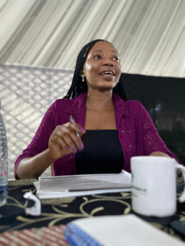
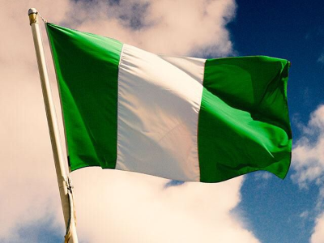

About Me
My name is Tayo. I was born in Nigeria and also live there. I am currently running my nail business as a nail techician as I am pursuing a degree in Software Development. I take family life very important and I cannot wait to have my own someday. I love to spend time with like-minds and I love to learn new things.
Lagos, Nigeria
Nigeria is the most populous country in Africa and the 7th most populous in the world, located in West Africa. It is home to over 250 ethnic groups, with the three largest being Hausa, Yoruba, and Igbo. Nigeria has one of the largest economies in Africa, driven by oil exports, which account for about 90% of its total export revenue. It is known for its rich cultural heritage, Nollywood (the second-largest film industry in the world by output), and its diverse wildlife, including rare species like the Cross River gorilla and the Niger Delta red colobus monkey. Nigeria is also a major producer of crops like cassava, yams, and peanuts.
